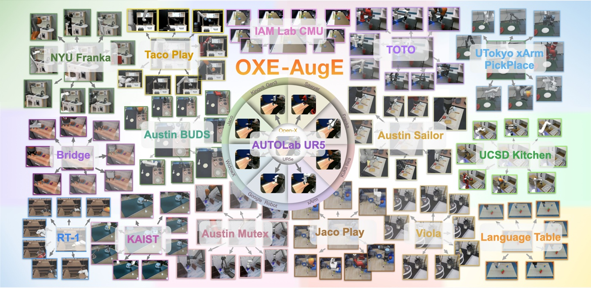

Guanhua Ji
I am an M.S.E. student in Robotics at the University of Pennsylvania and a researcher at the GRASP Lab, advised by Prof. Nadia Figueroa. I also conduct research at UC Berkeley's Mechanical Systems Control Lab, advised by Prof. Masayoshi Tomizuka. Previously, I was a research assistant in AUTOLab at Berkeley AI Research (BAIR), advised by Prof. Ken Goldberg. I received my B.S. in Computer Science from UCLA in 2025.
My research focuses on robot learning for contact-rich manipulation and generalization across robot embodiments. I develop methods that use generated video and audio, haptic demonstrations, and robot data augmentation to help robots learn reliable manipulation skills.
News
- Sep 2026Our preprint Dreaming the Sound of Contact is available, with real-robot videos.
- May 2026Started working on haptic teleoperation for force-aware robot learning at Prof. Masayoshi Tomizuka's Mechanical Systems Control Lab, UC Berkeley.
- 2026OXE-AugE was accepted to ICML as a Spotlight!
- Oct 2025Joined the Figueroa Robotics Lab at Penn GRASP.
- Aug 2025Started my M.S.E. in Robotics at the University of Pennsylvania.
- Jun 2025Graduated from UCLA with a B.S. in Computer Science (GPA 3.95).
Publications
Dreaming the Sound of Contact: Leveraging Video and Audio Generation for Zero-Shot Force-Aware Manipulation and Data Generation
Submitted to ICRA 2027 · *Equal contribution
Generated video provides motion, while generated audio shapes desired contact-force profiles. Our pipeline achieves 90% zero-shot success across four contact-rich tasks, versus 20% for a kinematic-only baseline. We also generate 200 force-aware demonstrations to train Diffusion Policies that generalize to new object placements and appearances.

OXE-AugE: A Large-Scale Robot Augmentation of OXE for Scaling Cross-Embodiment Policy Learning
ICML, 2026 · Spotlight · *Equal contribution
AugE-Toolkit retargets existing demonstrations to new robot embodiments, producing over 4.4 million trajectories across nine embodiments. Scaling augmentation improves policy generalization to unseen robots and robustness to visual changes. Fine-tuned OpenVLA-OFT and π0 achieve average task scores of 75% and 82% on an unseen robot–gripper configuration.
Research Experience
-
Mechanical Systems Control Lab, UC Berkeley May 2026 – Present
Research intern advised by Prof. Masayoshi Tomizuka. Built a force-feedback teleoperation system and designed controlled experiments to study force regulation and task-phase encoding in demonstrations. Trained flow-matching policies for contact-rich manipulation.
-
Figueroa Robotics Lab, University of Pennsylvania Oct 2025 – Present
Research intern advised by Prof. Nadia Figueroa. Proposed using generated video and audio for force-aware manipulation. Led pipeline development and real-robot experiments, and used the generated demonstrations to train Diffusion Policies.
-
AUTOLab, Berkeley AI Research (BAIR), UC Berkeley Jan 2025 – Jan 2026
Research assistant advised by Prof. Ken Goldberg. Led development of AugE-Toolkit and physical experiments for cross-embodiment policy learning. Released OXE-AugE with over 4.4 million trajectories across nine embodiments.
Education
-
University of Pennsylvania — M.S.E. in Robotics 2025 – 2027
-
UCLA — B.S. in Computer Science 2021 – 2025
GPA 3.95/4.0 · Dean's Honors List · Upsilon Pi Epsilon